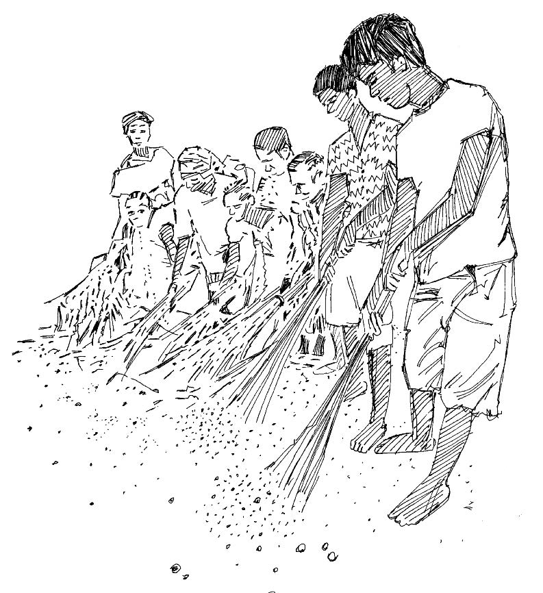

###Aperçu
- Les déchets peuvent attirer des rongeurs et devenir une zone de reproduction pour les mouches et les moustiques.
- La présence d’excréments d’animaux autour des maisons et dans le village augmente le nombre de mouches et d’insectes qui véhiculent des germes, provoquent des maladies et contaminent les sources d’eau.
Ce que vous devez savoir
- La présence d’excréments d’animaux autour des maisons et dans le village attire les mouches et insectes qui véhiculent des germes, provoquent des maladies et contaminent les sources d’eau.
- Les moustiques (qui véhiculent le paludisme , la dengue , le chikungunya , Zika et la fièvre jaune ) se reproduisent dans les plans d’eau stagnante.
- Les déchets devraient être brûlés ou enterrés.
- Il faut nettoyer la végétation aux abords des rivières et dans les mares proches des habitations.
- La zone entourant les sources d’eau (puits, pompes) doit rester propre.

Expliquez aux membres de la communauté combien il est important de maintenir leur environnement de vie propre. Organisez régulièrement des campagnes de nettoyage visantnotamment les maisons, les latrines, etc.
Ce que vous pouvez faire
- Collaborez avec les responsables politiques et les chefs traditionnels, le comité sanitaire du village et d’autres partenaires locaux pour décider de ce qui doit être nettoyé et de la marche à suivre.
- Aidez à organiser les activités pendant les jours de nettoyage fixés.
- Demandez aux dirigeants communautaires de mettre en place des groupes de volontaires pour chaque opération de nettoyage.
- Organisez des jours de nettoyage spéciaux auxquels toute la communauté participe (au moins deux fois par an, plus souvent si possible).
Mettre en place une initiative communautaire destinée à imaginer et créer une décharge centrale. Motiver et aider la communauté à travailler ensemble pour:
- Débarrasser les environs des excréments d’animaux.
- Débarrasser les environs des mares et autres plans d’eau, zones de reproduction des moustiques.
- Débarrasser la localité des déchets (en les brûlant ou en les enterrant).
- Nettoyer la zone autour des sources d’eau (comme les pompes et les puits).
- Créer et entretenir des réservoirs d’eau à proximité des sources d’eau.

Veillez à éliminer les déchets de manière hygiénique afin de préserver la communauté des germes.